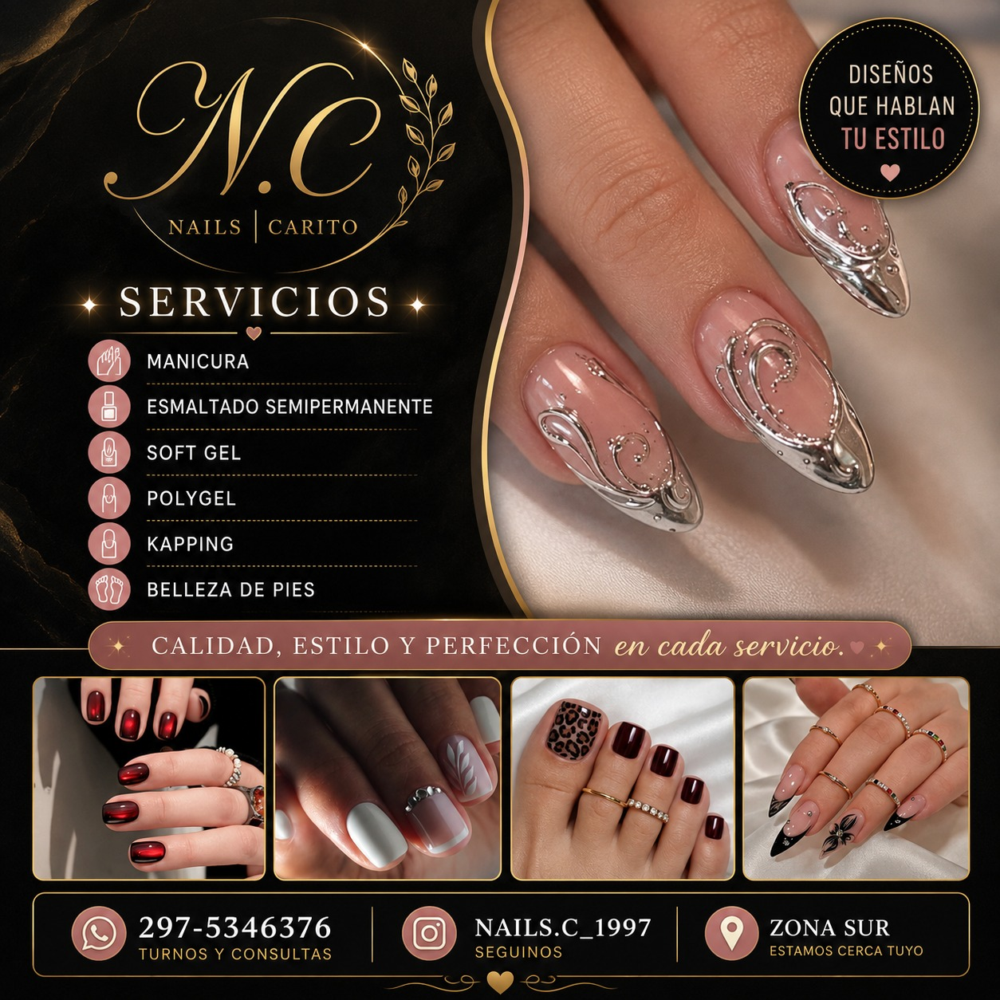

Nuestros Trabajos

Soft Gel y Esmaltado
Esmaltado semipermanente con detalles a mano alzada. Durabilidad y brillo perfecto por semanas.

Kapping y Diseño
Cuidado integral de la uña natural con kapping para mayor resistencia y un diseño personalizado.